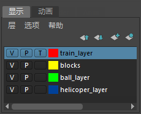

对象模板化之后，它将显示为线框，且无法在视图中选择。如果要查看对象所在的位置、但不想将其选中，则此选项非常有用。
对象已选中
对象已模板化
| 目标 | 操作 |
|---|---|
|
将对象模板化，使其无法选择。 |
选择要模板化的对象，然后选择。 或 选择对象，然后打开属性编辑器。在“形状”(Shape)选项卡上，打开“对象显示”(Object Display)选项并选择“模板”(Template)。 |
|
将对象的层模板化。 |
将对象添加到显示层编辑器(Display Layer Editor)中的层，然后单击选定层对应的第三个框以便显示 T。有关该显示的视频，请参见一次编辑层上的所有对象。 
继续单击此框，直到它变空并使对象再次可选为止。 也可以单击此框直到出现 R 为止，在不更改显示模式的情况下使对象不可选。 |
|
选择已模板化的对象。 |
使用 Hypergraph 或大纲视图。已模板化的节点在“Hypergraph”和大纲视图中具有不同的颜色。 或 单击状态行（工具栏）中的“按层次和组合选择”(Select by hierarchy and combinations)图标 ，然后单击选择遮罩的“模板”(Template)图标 。 |
|
使已模板化的对象再次可选。 |
选择已模板化的节点（如上所述），然后选择。 |